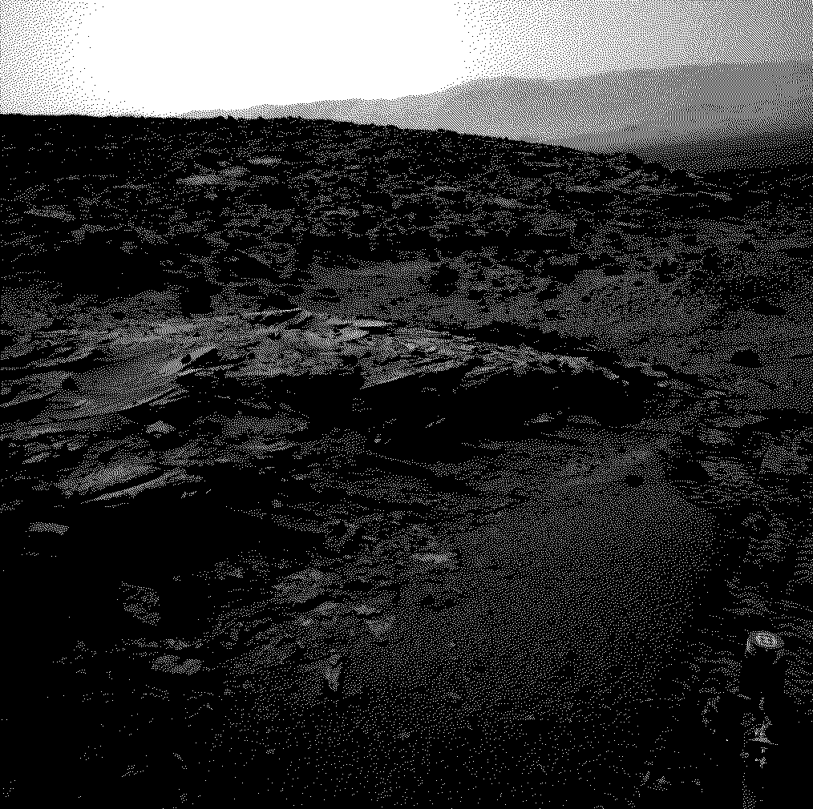
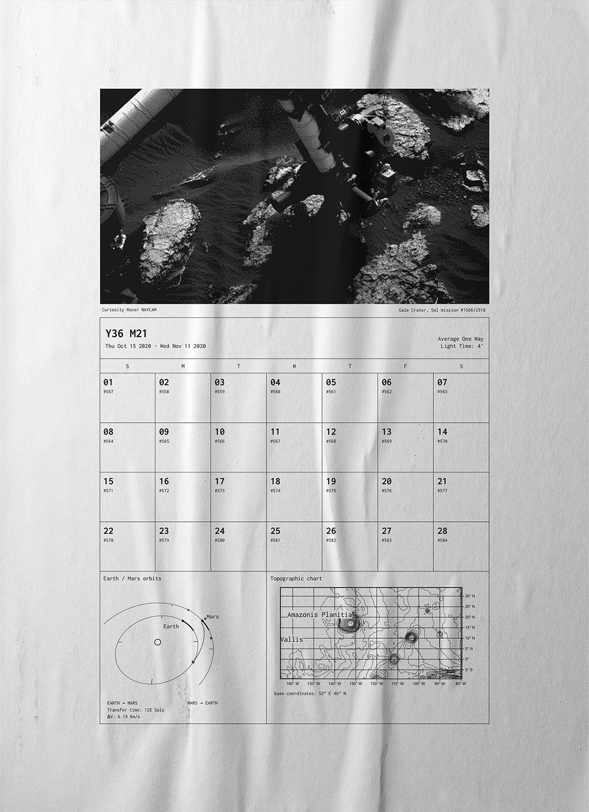
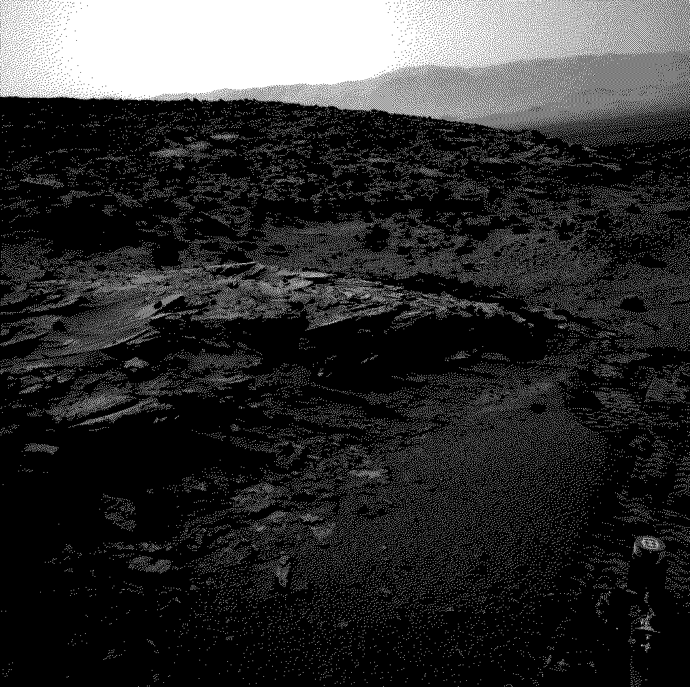
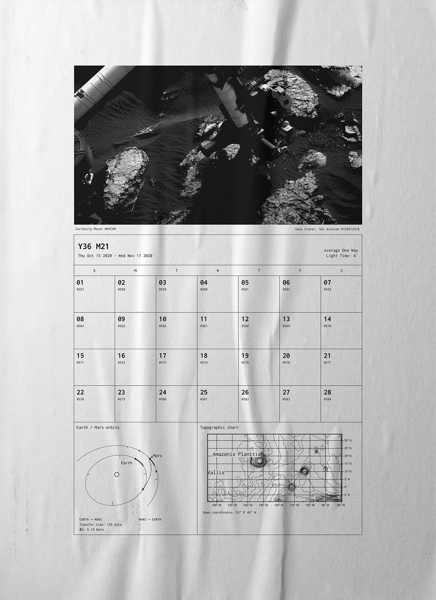
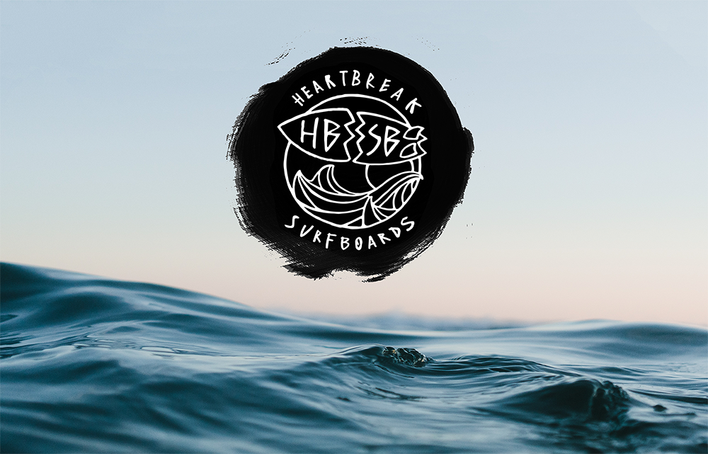
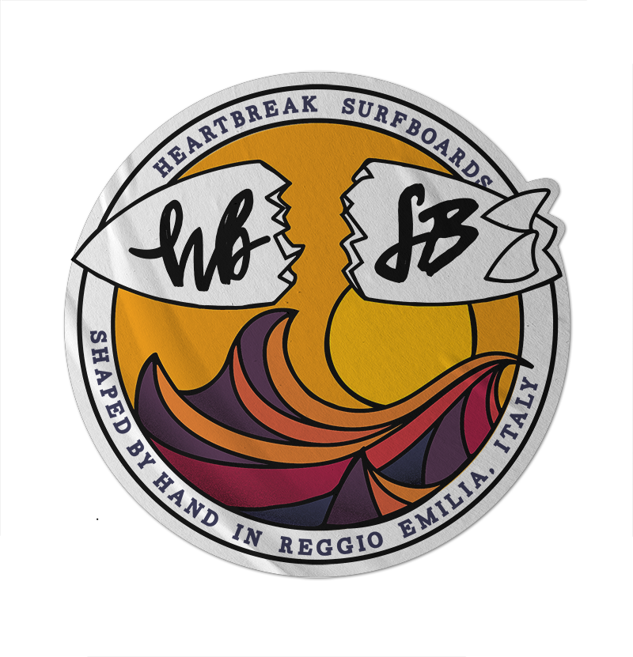
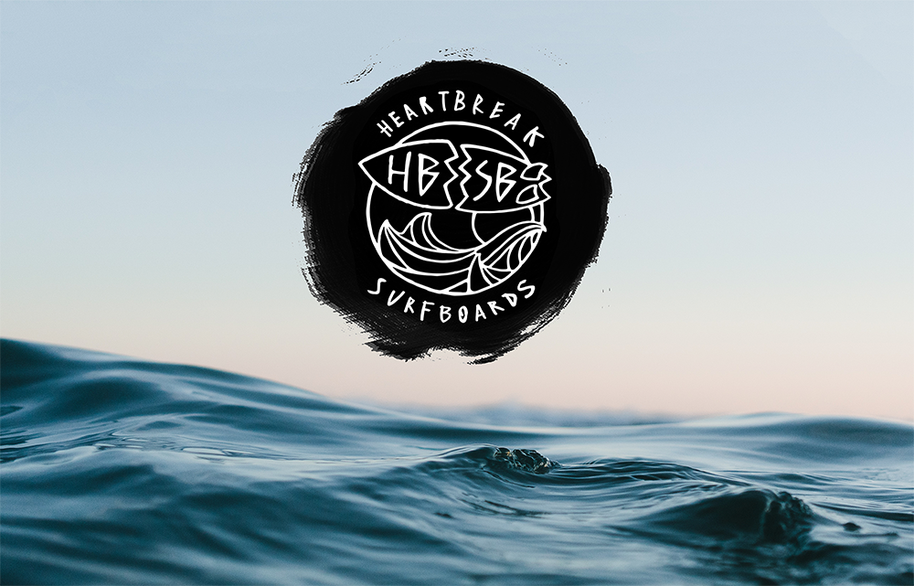
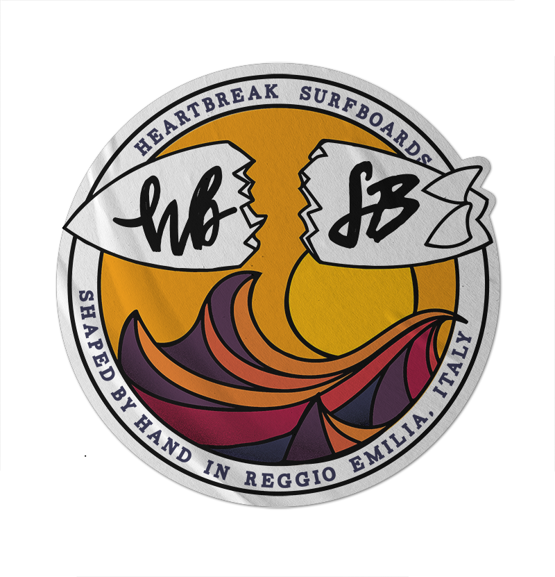

Press right arrow,
drag or use the button
to go forward
Drag images around,
double click to enlarge them,
click on videos to play/stop
2019
Aboca company museum
For the interactive museum experience designed by Dotdotdot studio
I produced two different motion design pieces, writing some scripts
to be executed inside Adobe After Effects.
2020
Generative light waterfall
Before the pandemy hit, an immersive experience designed
by Dotdotdot studio was
going to be set in a roman archeological site.
During the visit,
a waterfall of light particles coded in Processing,
would be projected where millennia ago the water once flew.
In this page you can spot some of the "happy accidents"
born during the coding of the motion graphic.
2018
Kinect energy game
Inside a historic
hydroelectric powerplant,
Dotdotdot studio designed
an interactive journey across the building.
I produced the user interface and its assets for a game
where visitors are encouraged to move their bodies,
while seeing their own speed of movement inside a depth map processed by a Microsoft Kinect.
Moving our own bodies create energy, and you can visualize roughly how much of it we produce at any given moment.
2020 - PERSONAL PROJECT
REW game & controller
I wanted to dive into P5.js so I rewrote a game I developed in a Processing course at university.
I added new capabilities and imagined a controller for the game.
To stay true
to the game's theme I used an old music cassette as the controller in reminescence of when we would stick a pencil to rewind its tape.
So I connected its wheels to an Arduino which then uses node.js to talk to the browser.
You can try it in the browser from the Github link, it can have performance issues.
2020 - PERSONAL PROJECT
First Mars calendar
During the pandemic I picked a project that would be a good exercise to learn new things.
I created this web-app which uses the Vue framework and lets you scroll through all the Mars' 668 sols.
It calls the NASA APIs to get the rovers' pictures, applying to them a dithering effect (You can't waste ink on Mars).
It shows other vital information: a Mars - Earth - Sun system rendered with Three.js which shows positions and window of opportunities for one-way trips.
And an explorable Mars topographic map using the D3 library. Still working on it, works better on Chrome.
2018
Heartbreak Surfboards
Brand
My friend Alex makes custom handmade surfboards and is currently trying to make a living out of his passion, surfing.
I have been helping him for a few years and that helped me to design his logo in a way that reflects his philosophy and his style.
This last version of the logo ditches the clean vectorial shapes, and instead displays the mural I painted in his laboratory.


 




 • Instagram photos and videos(1).jpg)
 • Instagram photos and videos(2).png) 


